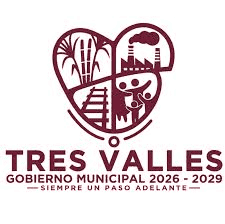
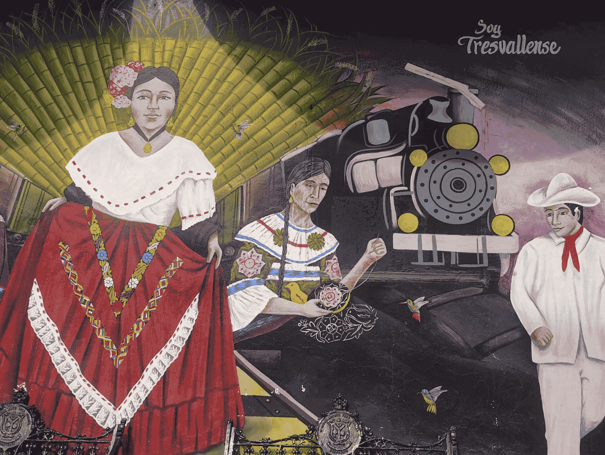
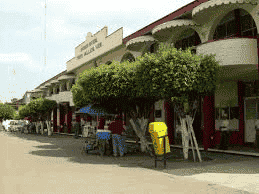
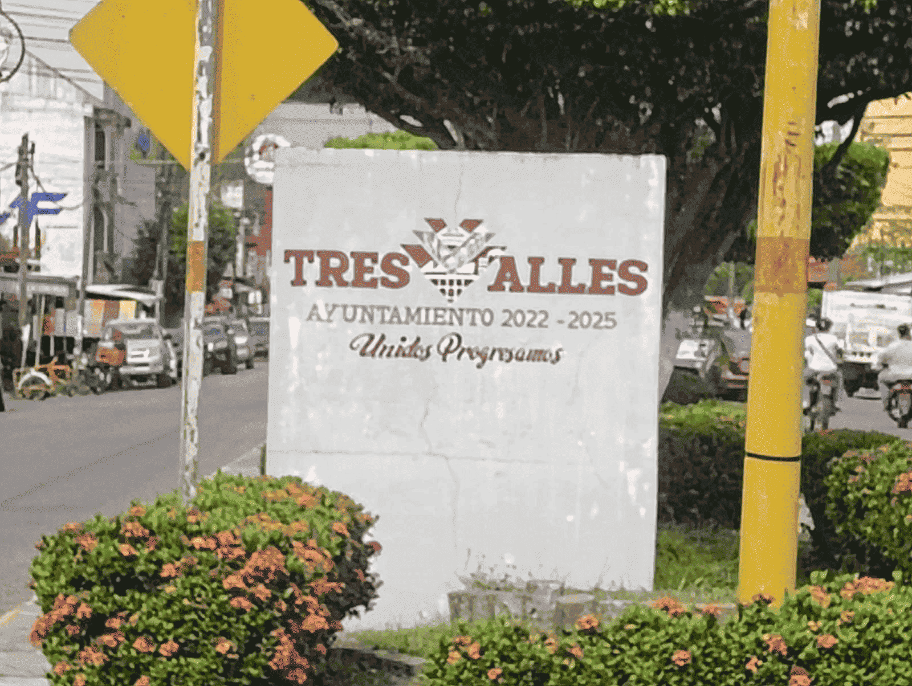
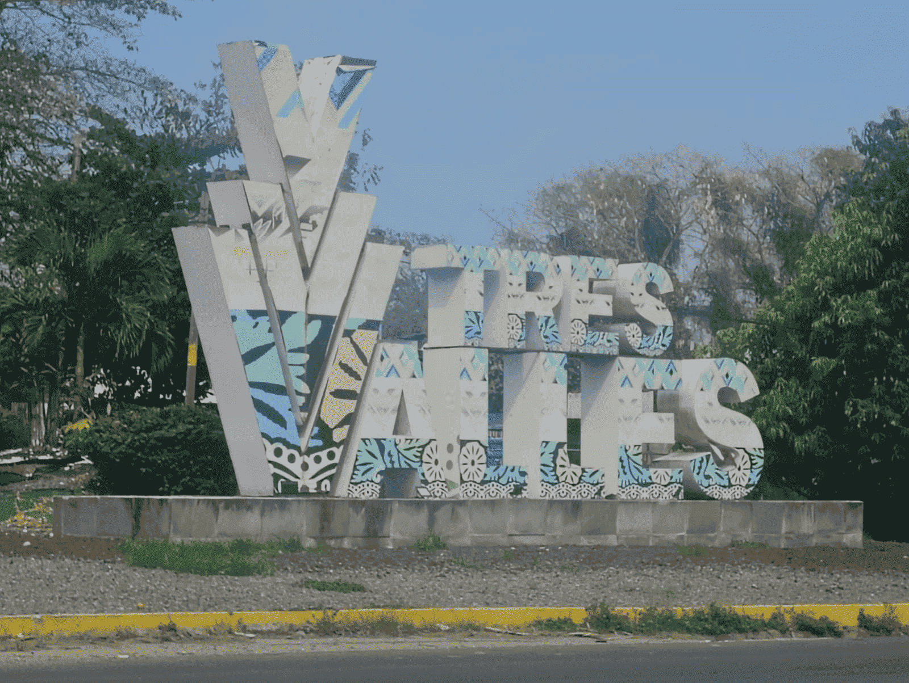

Ubicado en el corazón del estado de Veracruz, el municipio de Tres Valles es un destino que combina la riqueza natural, la tradición y la calidez de su gente. Rodeado de extensos campos verdes y bañado por un clima cálido y húmedo, este lugar ofrece un entorno ideal para quienes buscan conocer la esencia auténtica de la vida veracruzana. Tres Valles es reconocido por su importante actividad agrícola, especialmente en el cultivo de caña de azúcar, lo que le da un carácter productivo y dinámico. Sin embargo, más allá de su economía, el municipio destaca por su ambiente tranquilo, sus paisajes llenos de vida y sus espacios que invitan a la convivencia familiar y al descanso. Al recorrer sus calles y alrededores, podrás encontrar sitios de interés, áreas recreativas y rincones naturales que reflejan la identidad de la región. Además, su gastronomía típica, rica en sabores tradicionales, permite disfrutar de una experiencia completa que conecta con la cultura local. Visitar Tres Valles es más que conocer un lugar: es vivir la hospitalidad de su gente, descubrir sus tradiciones y dejarse envolver por la belleza de un municipio que, con sencillez y autenticidad, conquista a todo aquel que lo recorre.


¿Te gustaría descubrir un lugar lleno de vida, tradición y paisajes que te hacen sentir en casa? Entonces es momento de visitar el municipio de Tres Valles, en el hermoso estado de Veracruz. Aquí no solo encontrarás tranquilidad, sino también rincones especiales que vale la pena conocer: parques donde puedes relajarte, espacios naturales para disfrutar del aire libre y lugares que reflejan la esencia de su gente. Cada sitio tiene algo que contar, algo que se siente más que se explica. Pero Tres Valles también es trabajo, esfuerzo y orgullo. Su economía gira principalmente en torno al campo, donde la caña de azúcar y otros cultivos dan vida a la región. Ver de cerca esta actividad te permite entender el valor del esfuerzo diario de su gente y cómo la tierra es parte fundamental de su identidad. Y si hay algo que no puedes perderte, es conocer los pequeños emprendimientos locales. Desde fonditas llenas de sabor casero hasta negocios familiares que ofrecen productos únicos, aquí cada emprendimiento tiene una historia detrás. Son lugares donde no solo consumes, sino que apoyas sueños, tradición y pasión. Visitar Tres Valles no es solo hacer turismo, es conectar con su gente, con su cultura y con una forma de vida auténtica. Date la oportunidad de conocerlo… te aseguro que querrás volver.


Parafraseado por IA